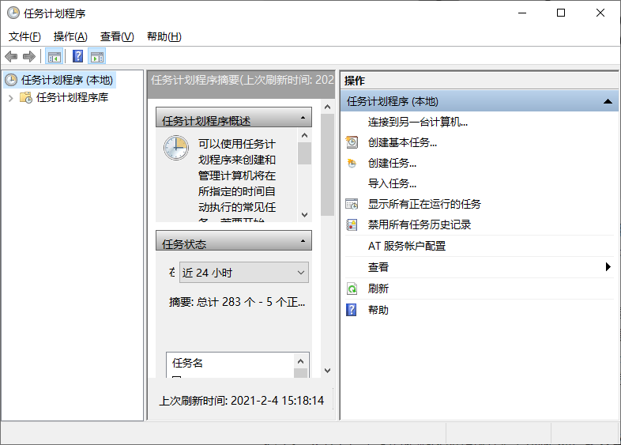
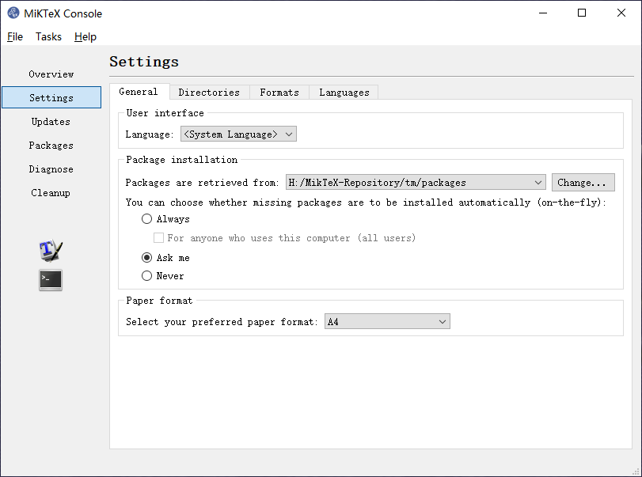

MiKTeX 是 TeX 系统的主流发行版之一，由于其体积较小，编译过程中（on-the-fly）自动下载安装未安装宏包的特性，受到许多 LaTeXer 的青睐。很多中国的 LaTeXer 入门时使用的发行版 CTEX 套装即是封装 MiKTeX 而成。MiKTeX 最初是针对 Windows 系统开发，应该是考虑了 Windows 系统编码问题，因此，在被编译源文档中使用中文路径和文件名一般能够正常编译（前提是源文档 utf-8 编码，xelatex 编译），这对于英文词汇量不足的中文用户相当友好，因此受到众多中文用户的欢迎。不过，对于中国用户来说，由于网络环境的因素，中国大陆的 CTAN 镜像源在 MikTeX 的 Console 中经常无法找到，这使得 on-the-fly 安装宏包的功能受到了限制。这个问题可以通过制作本地仓库而得到解决。本文将简单介绍制作 MiKTeX 本地仓库源的方法。
中国大陆主要的 CTAN 镜像站点
制作 MiKTeX 宏包仓库源首先需要知道可用的 CTAN 镜像有哪些，目前，在中国大陆的主要镜像站点如下[1]：
- 阿里云 http://mirrors.aliyun.com/CTAN/
- 北京理工大学 http://mirrors.bit.edu.cn/CTAN/
- 北京交通大学 https://mirror.bjtu.edu.cn/CTAN/
- 中国互联网络信息中心 https://mirrors.cnnic.cn/CTAN/
- 重庆大学 https://mirrors.cqu.edu.cn/CTAN/
- 华为云 https://mirrors.huaweicloud.com/CTAN/
- 华中科技大学 http://mirrors.hust.edu.cn/CTAN/
- 兰州大学 https://mirror.lzu.edu.cn/CTAN/
- 东北大学 http://mirror.neu.edu.cn/CTAN/
- 南京大学 http://mirrors.nju.edu.cn/CTAN/
- 上海交通大学 https://mirrors.sjtug.sjtu.edu.cn/ctan/
- 腾讯云 https://mirrors.cloud.tencent.com/CTAN/
- 清华大学 https://mirrors.tuna.tsinghua.edu.cn/CTAN/
- 中国科学技术大学 https://mirrors.ustc.edu.cn/CTAN/
- 浙江大学 http://mirrors.zju.edu.cn/CTAN/
在本文后续中，我将以 CTAN:// 来指代任意一个镜像源。
仓库源的下载
MiKTeX 官方提供方法
MiKTeX 官方提供了一个制作本地宏包仓库源的方法[2]：
- 创建一个本地的仓库目录：
1 | md <local-repository-dir> |
在命令行中使用命令时需要将 <local-repository-dir> 替换成为合法的路径名称（注意不要带着 < > 这对尖括号，哎，这完全是写给命令行白痴看的，熟悉命令行操作的人忽略这么白痴的提示吧）。
- 利用 MiKTeX 提供的
miktexsetup将仓库下载至本地：
1 | miktexsetup --verbose --remote-package-repository=<url> --local-package-repository=<local-repository-dir> --package-set=complete download |
这其中，<url> 需要替换为 CTAN://systems/win32/miktex/tm/packages/ （继续白痴提示：别忘了 CTAN:// 指代的是镜像源地址），<local-repository-dir> 替换为刚刚创建的既有本地路径。
MiKTeX 官方的方法需要使用官方的 miktexsetup 工具[3]，该工具支持的下载源可以通过命令行：
1 | miktexsetup --list-repositories |
列出所有支持下载的远程仓库源。我本人不使用 MiKTeX （portable 便携版除外）已经好几年了，在几年前使用 MiKTeX 时曾发现这个列表中经常会排除中国大陆的镜像源，而不在这个列表中的仓库源是无法通过 MiKTeX Console 设置为远程仓库源，自然地，也就无法通过官方的工具进行下载。在我进行官方方法测试时可能是因为我的运气比较好，抑或是 MiKTeX 官方进行了一些改进，有几个中国大陆镜像站（几个大学镜像站点）的仓库源被列在其中，因此这种方法得以测试成功。如果 MiKTeX 并未做出改进，并且你的运气没那么好，官方提供的这种方法就没有用处了，你需要继续向下看。
Wget 制作 MiKTeX 本地仓库源
GNU Wget（简称为 Wget）是一个在网络上进行下载的简单而强大的自由软件，其本身也是 GNU 计划的一部分。目前它支持通过 HTTP、HTTPS、FTP、FTPS 等最常见的 TCP/IP 协议下载文件。它是一个基于命令行的非交互式工具，因此可以轻松地从脚本中调用[4][5]。GNU Wget 相关下载可以参见 源码 和 Windows 安装包。
关于 Wget 的使用将 另行撰文 介绍，这里不进行详述。创建 MiKTeX 仓库源的脚本为：
1 | wget -r -N -np --no-check-certificate --no-host-directories --directory-prefix=<local-repository-dir> --cut-dirs=6 <url> |
简单介绍这其中几个参数：
-r递归下载；-N检查文件时间版本，比本地文件新的进行下载，其余忽略；-np忽略<url>中父目录的文件；--no-check-certificate不进行证书验证；--no-host-directories不创建站点名如mirrors.aliyun.com这样的目录--directory-prefix=<local-repository-dir>指定下载的目标目录--cut-dirs=6下载目标目录中截断<url>中6级目录
这种方法将不受 MiKTeX 仓库源地址的限制，但由于采用递归下载，MiKTeX 为下一版本升级准备的仓库文件夹 /next 也将被下载下来。我尝试了 -X 排除选项，但是并没有成功，可能是我的姿势还有一些不对吧 😓。/next 目录大约也有 4G 左右体积，如果硬盘不紧张，放着也没事🤣。
将更新脚本列入 Windows 任务计划
Windows 操作系统中有一个 任务计划程序，很少被人用到，然而，对于高效率工作来说，它具有很多妙用，可以自动清理回收站，自动开关软件，自动批量处理文件等。
使用命令行：
1 | taskschd.msc |
可以调出 任务计划程序，如下图所示：

点击 创建基本任务... 在向导内一步步设定任务名称、触发条件、执行的程序或批处理文件即可。Windows 的程序非常傻瓜，这里不再详述。更新脚本列入 Windows 任务计划，则可以定期将 MiKTeX 本地仓库进行更新。
在 MiKTeX 中指定本地仓库源
运行 MiKTeX-Console，将跳出如下对话框：

选择 General 选项卡，在 Package installation 栏目中 选择 Package Source 为 Local Package repository (file system)，并将文件夹指向 <local-repository-dir> 即可。上图中，<local-repository-dir> 即为 H：/MiKTeX-Repository/tm/packages。显然，该仓库也可以置于局域网中，这样可以一个团队共用同一个仓库源进行更新，不需要每人都在自己计算机本地制作一个仓库源。
Happy LaTeXing！
参考
- [1] 一份简短的关于 LaTeX 安装的介绍
texdoc install-latex
- [3] MIKTeX Docs
- [4] 维基百科
- [5] GNU Wget